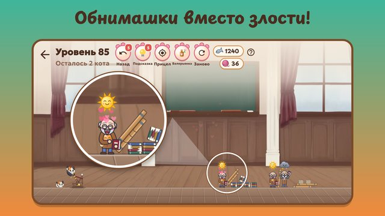

Котопульта
Строгий завуч, суровый профессор, душный начальник… Хватит хмуриться! Заряжай котопульту пушистыми котиками.
Оттяни кота, прицелься по пунктиру и отпусти. Каждое попадание котом или упавшей партой гасит грозовую тучку над чьей-то головой, и одежда из серой становится яркой. Когда тучек не осталось, все счастливы, а уровень пройден!

- 200 уровней в 16 местах: школа, столовая, спортзал, деревня, ферма, дача, универ, общежитие, библиотека, двор, поликлиника, рынок, вокзал, завод, стройка и офис в понедельник. В каждом месте своя котопульта: линейка, половник, весы, тележка носильщика.
- Честная физика: парты, стопки книг, стекло и трубы падают по-настоящему.
- 10 пород со своими умениями: британец бьёт сильнее, сиамский делится на трёх котят, бенгал делает рывок, сфинкс парит в плаще, мейн-кун сносит всё на пути.
- Боссы в конце каждого места — от завуча до душного гендиректора.
- Кото-кафе: обставляй его мебелью, а подобревшие боссы приходят в гости и гладят котиков.
- Альбом котов: окрасы, наряды и Супер-Сфинкс в плаще.
- Подсказка «куда целиться», отмена броска, супер-прицел и валерьянка.
- Урок дня, ежедневные задания и праздники с сувенирами; игра без интернета, на русском и английском.
Котикам никогда не больно: они мягко приземляются на лапки и идут к своим, а люди только удивляются и радуются. По желанию — одно напоминание, если не заходил неделю; выключается в настройках. Подари всем немного милоты!